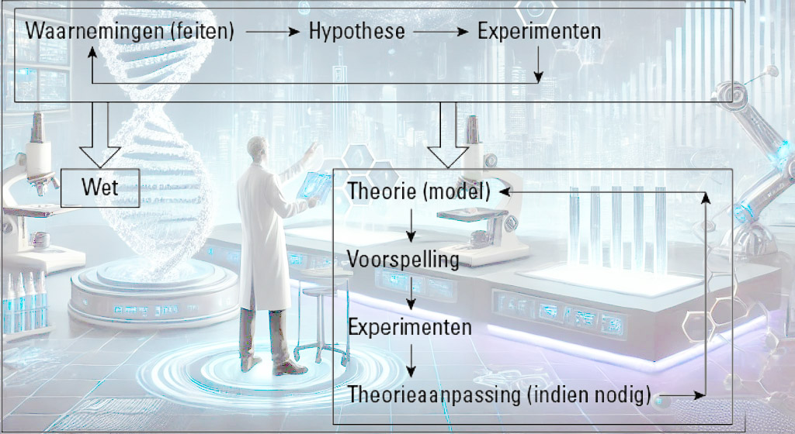

Wat is wetenschap?

Wetenschap is:
- de systematisch verkregen, geordende en controleerbare menselijke kennis
- het bijbehorende proces van kennisverwerving
- de gemeenschap waarin deze kennis wordt verzameld
De wetenschappelijke methode
is een systematische manier om kennis te vergaren.
De gevolgde methodes variëren tussen de formele,
empirische en sociale wetenschappen.
Wat is pseudowetenschap?
Pseudowetenschap is de benaming voor een stelsel van opvattingen, uitspraken, of handelingen dat de toets van een wetenschappelijke methode niet doorstaat, maar waarvan aanhangers toch beweren of suggereren dat het om wetenschap gaat.
Kenmerken
- Vage bewoordingen
- Geen passende controles
- Geen gebruik parsinomie
- Verdoezelend taalgebruik
- Niet omschrijven toepassingsvoorwaarden
- Vasthouden aan ndogma's
- Niet verifieerbaar
- Onterechte conclusies
- Onluiste beweringen
- Bouwen op poersoonlijke getuiogenissen
- Selectief gebruik van bewijs
- Omgekeerde bewijsladt
- Gebrek aan openheid
- Geeen vooruitgang
- Gebrek aan zelfcorrectie
- Verzinnen van bronnen
Voorbeelden
- Alternatieve geneeswijzen
- Creationisme
- Ufologie
- De opvattingen van Immanuel Velikovsky
- Aardstralen
- Astrologie
- Auralezen
- Biogeometrie
- Bioritme (theorie)
- Chiromantie (handlezen)
- Frenologie
- Grafologie
- Neurolinguïstisch programmeren
- Numerologie
- Parapsychologie
- Piramidologie
- Reflexologie
- Toegepaste kinesiologie